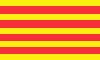

Cataluña
Catalonia
The area of Catalonia lies along the eastern coast of Spain, starting at the French border southwards. This area has its own culture and differs in several things from Spain. For example the people have their own language, Catalan, which is spoken by ten million people in Catalonia, France, the Balearic islands and Sardinia.
The area is mountainous and many of the mountains are limestone with caves. The area has numerous show caves.
 Barcelona
Barcelona Cuevas de Benifallet
Cuevas de Benifallet Coves de Can Riera
Coves de Can Riera Muntanya de Sal a Cordona
Muntanya de Sal a Cordona Circ romà
Circ romà- Les Coves del Collbato
- Coves del Cogul
- Coves del Toll
- Balma d'Esplugues
- Mina Eugènia
- Cova de la Font Major
- Cova Del Llop Marí
- Santa Cova de Montserrat
- El Puig de la Balma
- Cova Hospital de Santa Llúcia
- Monastery of Sant Miquel del Fai
- Coves Prehistòriques de Serinyà
- Mina Victòria
 Search Google for "Cataluña cave"
Search Google for "Cataluña cave" Catalonia - Wikipedia (visited: 17-MAR-2021)
Catalonia - Wikipedia (visited: 17-MAR-2021) Website of the Generalitat, Government of Catalonia
Website of the Generalitat, Government of Catalonia Index
Index Topics
Topics Hierarchical
Hierarchical Countries
Countries Maps
Maps Search
Search